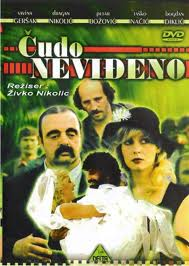
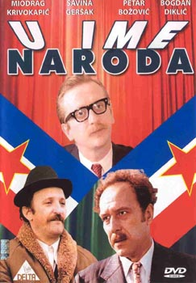

A young couple, brought up under the harsh laws of their mountain village, move to the coast in search of work. The wife finds work in a nudist colony, making her question their austere way of life.
n a sleepy fishing village filled with lazy men, a visionary suggests an ambitious project to create fertile lands. He gets help from a beautiful waitress who manipulates the village folk.

A company in a small town does really well due to its enterprising director. Even as the townsfolk are proud of the director, a few people try to bring him down.
